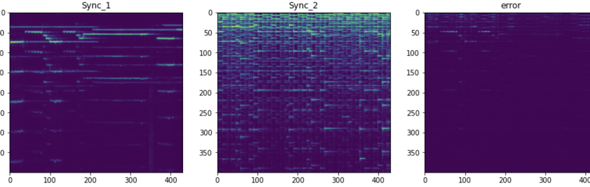

Inspired by the success of neural transfers on art the first thing my mind thought was this is superb! Now I am going to make AI learn music. I learnt harmonium when I was small but could not find time to learn the flute. Well, if I can't learn it there is no issue, I could also make AI learn it and it is simple All it requires is a little tuning with librosa
Here is the sherlock theme song (copyrights with BBC) playing and AI in the background trying to learn to play flute using tensorflow. The computing power provided was lower and even on GPU training for 2 days, we could not make deep learning crystal clear. So the best thing it captures is an essence of the song where it learns with the pauses, though there is a lag!

Librosa can read those spectrums and generate those plots, our job is simply to minimise errors generated and make the neural network learn, by passing the original sound through filters. The net is a relu activated 2d convolution neural network where loss is minimised using weights attached to both the content where the style has to be transferred and the style that has to be learnt, in this case a flute. The weighted sample can then be normalized with the number of samples. Playing around with weights can help in better tuning and adding more filters may help increase in better audio quality too.